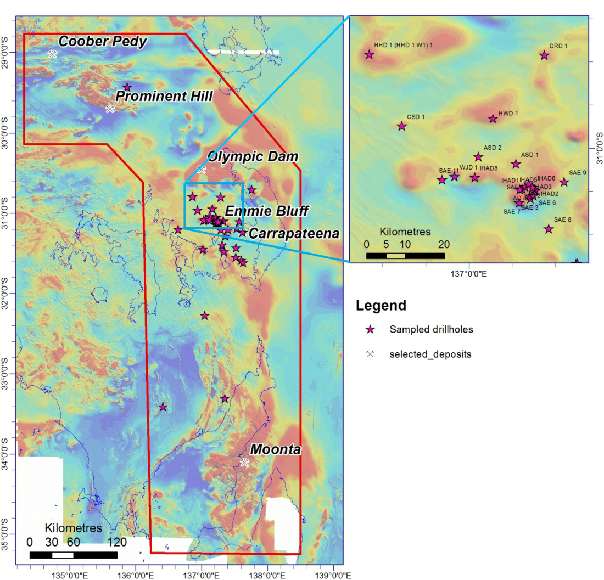
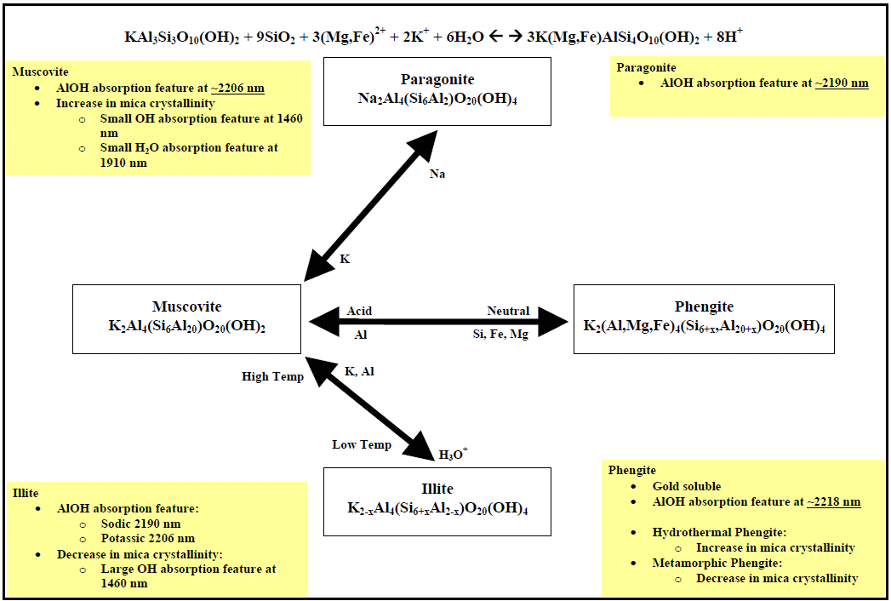
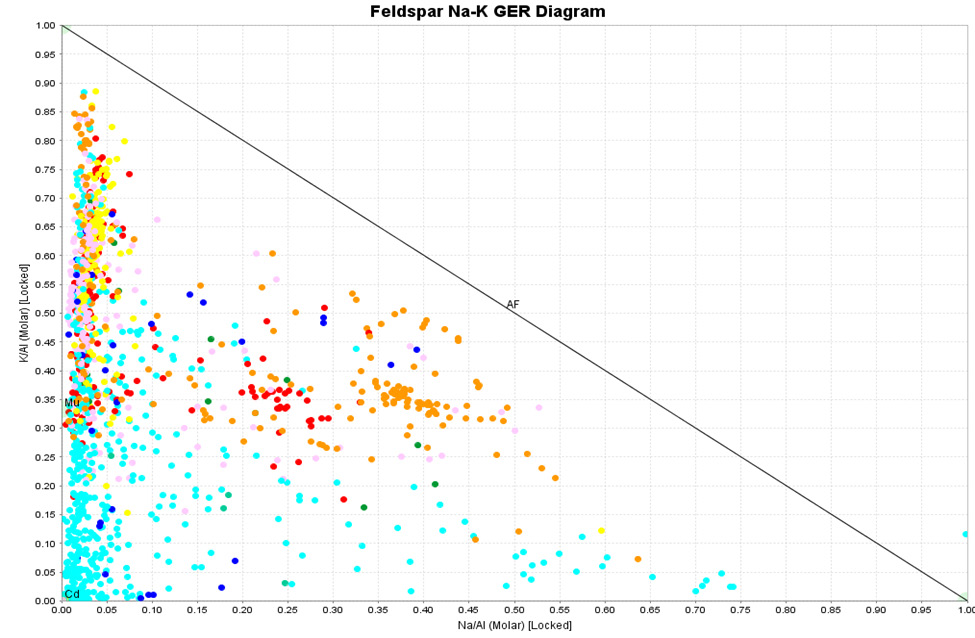
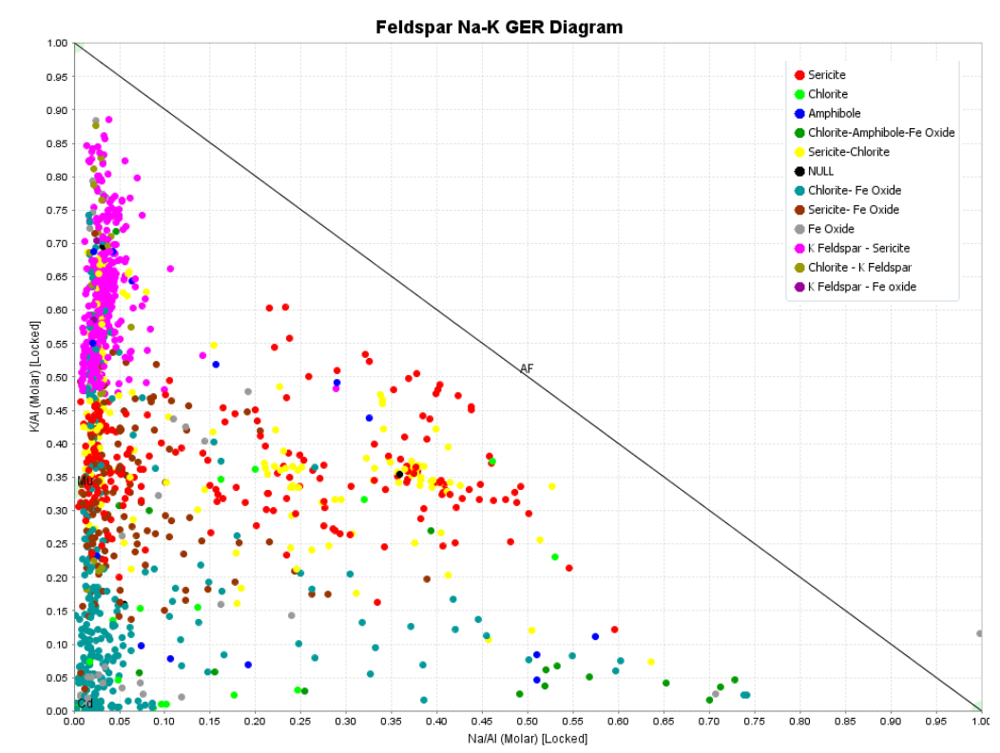
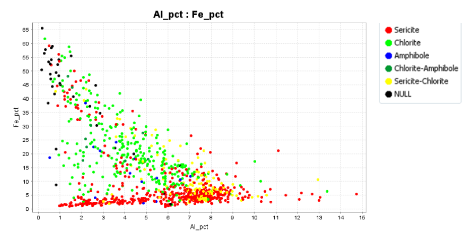
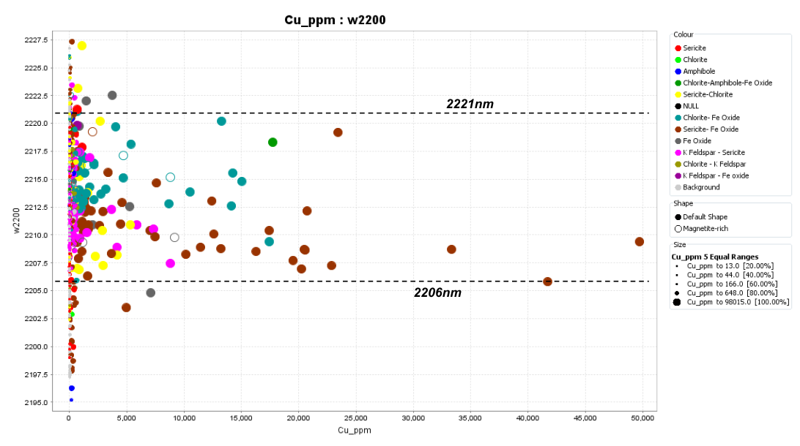
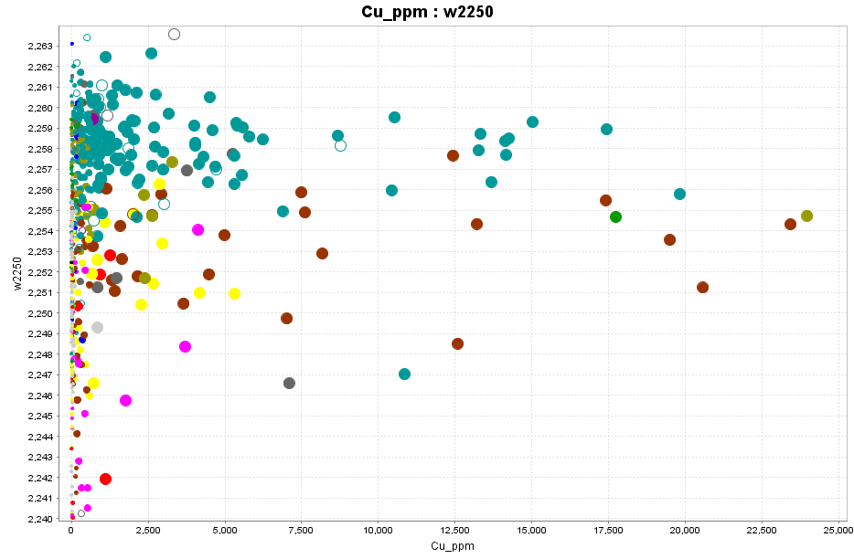
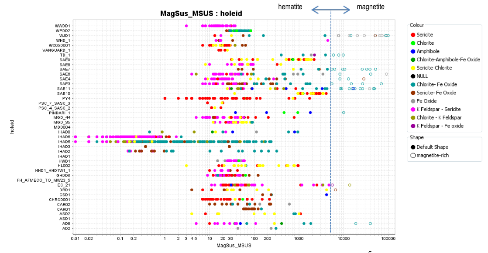

Balance de masa e informe IOCG
Gawler oriental · datos públicos
Comparación
Qué dice el informe de 2013 y qué calcula el balance mineral
En 2013, Fabris y su equipo estudiaron la alteración de rocas con cobre y oro
en el este del Cratón Gawler. Usaron análisis químicos, un espectrómetro de
testigo (HyLogger) y medidas de qué tan magnética es la roca.
El archivo Resultado_Balance_Mineral.csv sale del módulo
geoia.site/balance: a partir de la
misma química estima cuánto hay de cada mineral. Aquí se comparan las dos lecturas.
Las dos fuentes miran las mismas 1 225 muestras de 43 sondajes.
En el espectro, lo más frecuente es mica blanca (sericita, 529 muestras)
y clorita (366). Hay más fengita que moscovita, y la clorita suele ser
rica en hierro: eso ya lo decía el informe.
Casi 8 de cada 10 muestras perdieron sodio. Donde hay más cobre
(más de 270 ppm), la mica suele tener su banda cerca de 2206–2221 nm
(90 % de los casos) y la clorita cerca de 2246 nm o más (97 %).
El hierro también encaja: si la química marca mucho Fe, el balance
calcula más magnetita y hematita (r = 0,98).
En qué no coinciden
El espectrómetro no ve cuarzo ni feldespato potásico. El balance sí:
en promedio un 32 % de cuarzo y un 17 % de feldespato. Por eso el
feldespato es el mineral principal en 484 muestras, y el informe
solo lo marca en 81.
La magnetita es el mayor desacuerdo. El informe la infiere con la
susceptibilidad magnética (qué tan magnética es la
muestra): 51 superan el umbral. El balance, usando solo el hierro
químico, pone más de 5 % de magnetita en 430 muestras. El espectro
y el balance eligen el mismo mineral principal solo en 1 de cada 3
muestras. Además, el informe habla de mezclas tipo IOCG; GeoIA usa
nombres de pórfido y deja sin clasificar el 58 %.
Qué se compara
Informe 2013
Balance (GeoIA)
Feldespato potásico como mineral principal
81 muestras
484 muestras
Magnetita
51 muestras muy magnéticas
430 con más de 5 %
¿Mismo mineral principal?
Coincide en el 33 % de las muestras
Cómo se nombra la alteración
Mezclas IOCG (sericita + óxido de Fe, clorita + magnetita…)
58 % sin clasificar; el resto tipo pórfido
¿Química y espectro dicen lo mismo?
No se midió muestra a muestra
Sí en el 61 % de 510 muestras
En corto: el balance confirma la historia del informe (se pierde sodio,
entra hierro, hay mica y clorita, y el cobre se asocia a ciertas bandas
del espectro) y pone números a minerales que el espectrómetro no ve.
Se apartan cuando hay que decidir si el hierro es magnetita o hematita,
o cuando una muestra mezclada se resume en un solo mineral.
Cómo se leyó cada fuente
No son dos campañas distintas: son dos formas de mirar las mismas muestras.
El informe nombra la alteración. El CSV calcula porcentajes de minerales.
Informe de 2013
Balance mineral (GeoIA)
Qué usa
Química de la roca, espectrómetro de testigo y susceptibilidad magnética
Digestión de 4 ácidos (ICP) para Cu y trazas; fusión de borato de litio para mayores (Al2O3, Na2O, K2O, Fe2O3, SiO2…), Genalysis §3.1
El balance de masa exige esa química casi total. Agua regia o 2 ácidos no disuelven bien los silicatos: K/Al, Na/Al y los % minerales quedarían sesgados
Cómo clasifica
Relación potasio/aluminio y sodio/aluminio, mineral del espectro y umbral magnético
Nombres tipo pórfido (fílica, argílica, propilítica, potásica) y % de cada mineral
Qué entrega
Nombres de mezclas y una lista de elementos anómalos (Tabla 4)
No da cantidades; el espectro no ve feldespato ni cuarzo
Puede confundir magnetita con hematita si solo mira el hierro
Ubicación de los sondajes
Los dos mapas cubren la misma zona. A la izquierda, cuántos elementos salen anómalos. A la derecha, la alteración más frecuente en cada pozo (GeoIA). Un clic abre el sondaje.
Figura 1 · anomalías químicas (Tabla 4). Rojo: más elementos anómalos.Mismo plano, coloreado por alteración (fílica, argílica, propilítica, potásica o indefinida).

Figura 1 del informe: sondajes sobre imagen aeromagnética. El recuadro señala Emmie Bluff.

Figura 17: la banda cerca de 2200 nm distingue moscovita (más corta) de fengita (más larga).
Cross-plots y ternario K–Na–Al, recreados con el CSV
En cada fila: recreación a la izquierda, figura del informe a la derecha. Mismo tamaño y leyenda arriba a la derecha. Los nombres siguen el uso de GeoIA: cross-plot (dos ejes) o ternario (tres componentes).
Cross-plot K/Al vs Na/Al
Forma en dos ejes del ternario K–Na–Al (feldespato-K, albita, mica). Color = mineral principal que calcula el balance (sin cuarzo).
Ejes 0–1, leyenda arriba a la derecha. Izquierda = poco sodio (alteración); derecha = más sodio.

Figura 8 del informe (cross-plot GER). Leyenda: tipo de roca. La nube a la izquierda es alteración; la derecha vacía, roca poco alterada.
Aporte del balance de masa. El informe colorea por litología. El balance pone el mineral principal en cada punto e incluye feldespato potásico y cuarzo, que el espectrómetro no ve (484 muestras con feldespato dominante frente a 81 en el informe).
Cross-plot K/Al vs Na/Al — mezcla de minerales
El mismo cross-plot GER, ahora coloreado por la mezcla espectro + química (como la Fig. 12). Sigue siendo la proyección del ternario K–Na–Al.
Mismos ejes 0–1 y misma posición de leyenda que la figura de al lado.

Figura 12 del informe. Leyenda arriba a la derecha: mezcla de minerales.
Aporte del balance de masa. Replica el cross-plot con las mismas reglas de mezcla y, además, entrega el % de cada mineral en el pozo (sección de sondajes), no solo el nombre de la mezcla.
Qué es cada zona del ternario proyectado (Fig. 12)
Arriba a la izquierda (mucho potasio, casi sin sodio): feldspato potásico.
A media altura a la izquierda (marca «Mu», K/Al ≈ 0,33): moscovita / sericita.
Abajo a la izquierda (origen, marca «Cd»): clorita.
Abajo a la derecha (mucho sodio): albita.
Centro y derecha casi vacíos: roca poco alterada (volcanitas GRV o granito Donington).
Cross-plot Fe vs Al
Hierro frente a aluminio. Color = mineral del espectro. Condición: Fe y Al de fusión / 4 ácidos, no de agua regia.
Eje X: Al (%). Eje Y: Fe (%). Leyenda arriba a la derecha.

Figura 10 del informe. Leyenda: mineral del espectro (sericita, clorita, anfibol…).
Aporte del balance de masa. Convierte el Fe químico en % de magnetita y hematita (r = 0,98 con el hierro). El espectro solo nombra el mineral de la banda; el balance cuantifica los óxidos de Fe.
Cross-plot Cu vs banda de la mica (~2200 nm)
Cobre (digestión de 4 ácidos) frente a la posición de la banda de la mica. Líneas en 2206 y 2221 nm.
Cobre 0–50 000 ppm. Leyenda arriba a la derecha.

Figura 20 del informe. Círculo abierto = magnetita.
Aporte del balance de masa. Confirma el vector del informe (90 % del Cu alto cae en 2206–2221 nm) y colorea cada punto con la mezcla mineral, no solo con el espectro.
Cross-plot Cu vs banda de la clorita (~2250 nm)
Cobre (digestión de 4 ácidos) frente a la banda de la clorita. Línea en 2246 nm.
Cobre 0–25 000 ppm. Leyenda arriba a la derecha.

Figura 23 del informe. Cobre alto sobre 2246 nm.
Aporte del balance de masa. El 97 % del Cu alto cae en la ventana de clorita férrea. El balance añade el % de clorita y de óxidos de Fe en esos mismos tramos.
Cross-plot susceptibilidad magnética vs sondaje
Qué tan magnética es cada muestra (escala logarítmica). Círculo abierto = umbral de magnetita del informe.
Izquierda de la línea: hematita. Derecha: magnetita. Leyenda a la derecha.

Figura 13 del informe. Izquierda de la línea: hematita; derecha: magnetita.
Aporte del balance de masa. El informe marca magnetita con un umbral magnético (51 muestras). El balance, con el Fe de la fusión / 4 ácidos, calcula % de magnetita en 430 muestras (>5 %). Ahí está el desacuerdo principal.
Comparación mineral del espectro vs mineral del balance
No es un cross-plot: cada celda cuenta muestras. La diagonal es donde espectro y balance eligen el mismo mineral.
Aporte del balance de masa. Mide el acuerdo muestra a muestra (33 %). El desfase está sobre todo en feldespato potásico y magnetita, minerales que el espectro no cuantifica.
Cross-plot Cu vs índice Tabla 4
Cobre (4 ácidos) frente a cuántos elementos superan 10 veces la corteza. Color = alteración GeoIA.
Eje Y: Au, Ag, As, Ba, Bi, Ce, Cu, La, Sb, Se, Te, Mo, W (umbrales de la Tabla 4).
Aporte del balance de masa. El informe lista anomalías. El balance añade la clase de alteración (fílica, argílica, propilítica, potásica) sobre el mismo cobre.
Explorar un sondaje
La profundidad aumenta hacia abajo. A la izquierda, los minerales que calcula el balance. A la derecha, hierro, cobre y el índice de anomalías.
Fuentes y cómo citar
Origen del PDF. El archivo
RB201300014.pdf
se descargó del
catálogo SARIG
(South Australian Resources Information Gateway, Geological Survey of South Australia /
Department for Energy and Mining). Registro d20010635, publicado el 1 de octubre de 2013.
Copia oficial en Azure:
RB201300014.pdf
(20,72 MB). Identificador persistente:
https://pid.sarig.sa.gov.au/document/d20010635.
Licencia del catálogo: CC BY 4.0.
Fabris AJ, Halley S, van der Wielen S, Keeping T, Gordon G, 2013.
IOCG-style mineralisation in the central eastern Gawler Craton, SA; characterisation of alteration, geochemical associations and exploration vectors,
Report Book 2013/00014. Department of Innovation, Manufacturing, Trade, Resources and Energy, South Australia, Adelaide.
Origen del CSV de balance.Resultado_Balance_Mineral.csv se obtuvo en el módulo
https://geoia.site/balance/
(Balance mineral y zonación de alteración, GeoIA). Ese módulo estima el porcentaje
de cada mineral y una clase de alteración (fílica, argílica, propilítica o potásica),
que aquí se comparan con el informe.
Los umbrales geoquímicos copian la Tabla 4 del informe (10 veces la abundancia cortical de Rudnick y Gao, 2003).
La química del informe (§3.1) combina digestión de 4 ácidos (Cu y trazas) y fusión de borato de litio (mayores): esa es la condición para los cross-plots y para el balance de masa.
Las figuras a la derecha de cada gráfico se extrajeron del PDF original para facilitar la comparación visual; el informe sigue siendo la referencia.
Esta página es una lectura crítica del report book, no un sustituto.
Los ensamblajes «estilo informe» se reconstruyeron con las reglas de
§§4.2.1–4.2.4; no reproducen cada decisión petrográfica de 2013.